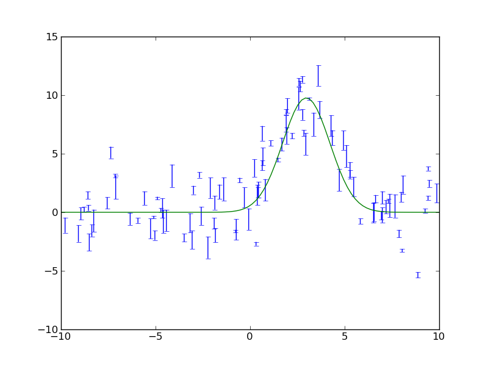
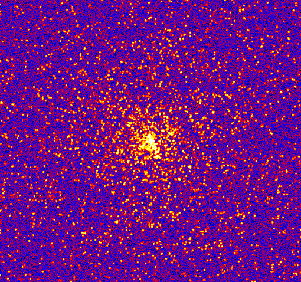

Quick tour of Python¶
In the spirit of this workshop let’s jump in to real Python analysis code. These examples assume you are using the IPython pylab mode which automatically imports a number of numerical and plotting routines into the session.
Reading a table and plotting¶
The Fermi Gamma-ray satellite has a nice catalog of AGN available through HEASARC. The script below will read in the catalog data using the astropy.io.ascii module, do some basic filtering with NumPy, and make a couple of plots with matplotlib
# Make external packages available
from astropy.io import ascii
# Read table.
# ==> dat[column_name] and dat[row_number] both valid <==
data_url = 'https://raw.githubusercontent.com/python4astronomers/python4astronomers/stable/examples/tables/fermi_agn.dat'
dat = ascii.read(data_url)
redshift = dat['redshift'] # array of values from 'redshift' column
flux = dat['photon_flux']
gamma = dat['spectral_index']
# Select rows that have a measured redshift
with_z = (redshift != -999)
figure(1)
semilogx(flux, gamma, '.b', label='All') # First plot!
semilogx(flux[with_z], gamma[with_z], 'or', label='With Z')
legend(numpoints=1)
grid()
xlabel('Flux (photon/cm$^2$/s)') # latex works
ylabel('Spectral index $\Gamma$')
# Select low- and high-z samples
lowz = with_z & (redshift < 0.8)
highz = with_z & (redshift >= 0.8)
figure(2)
bins = arange(1.2, 3.0, 0.1) # values from 1.2 to 3.0 by 0.1
hist(gamma[lowz], bins, color='b', alpha=0.5, label='z < 0.8')
hist(gamma[highz], bins, color='r', alpha=0.5, label='z > 0.8')
xlabel('Spectral index $\Gamma$')
title('$\Gamma$ for low-z and high-z samples')
legend(loc='upper left')
ascii.write(dat[with_z], 'fermi_agn_with_z.dat')


Curve fitting with SciPy¶
SciPy provides curve_fit, a simple and useful implementation of the Levenburg-Marquardt non-linear minimization algorithm. This example shows a code to generate a fake dataset and then fit with a gaussian, returning the covariance matrix for parameter uncertainties.
from scipy.optimize import curve_fit
# Create a function
# ==> First encounter with *whitespace* in Python <==
def gaussian(x, a, b, c):
val = a * exp(-(x - b)**2 / c**2)
return val
# Generate fake data.
# Note: functions in random package, array arithmetic (exp)
n = 100
x = random.uniform(-10., 10., n)
y = exp(-(x - 3.)**2 / 4) * 10. + random.normal(0., 2., n)
e = random.uniform(0.1, 1., n)
# Note: these error bars don't reflect the distribution from which
# they were drawn! Chi^2 of the fit will be poor.
# Fit
popt, pcov = curve_fit(gaussian, x, y, sigma=e)
# Print results
print("Scale = %.3f +/- %.3f" % (popt[0], sqrt(pcov[0, 0])))
print("Offset = %.3f +/- %.3f" % (popt[1], sqrt(pcov[1, 1])))
print("Sigma = %.3f +/- %.3f" % (popt[2], sqrt(pcov[2, 2])))
# Plot data
errorbar(x, y, yerr=e, linewidth=1, color='black', fmt=None)
# Plot model
xm = linspace(-10., 10., 100) # 100 evenly spaced points
plot(xm, gaussian(xm, popt[0], popt[1], popt[2]))
# Save figure
savefig('fit.png')
The plotted fit result is as shown below:
{kind=link}
Intermission: NumPy, Matplotlib, and SciPy¶
These three packages are the workhorses of scientific Python.
- NumPy is the fundamental package for scientific computing in Python [NumPy Reference]
- Matplotlib is one of many plotting packages. Started as a Matlab clone.
- SciPy is a collection of mathematical algorithms and convenience functions [SciPy Reference]
Synthetic images¶
This example demonstrates how to create a synthetic image of a cluster, including convolution with a Gaussian filter and the addition of noise.
from astropy.io import fits
from scipy.ndimage import gaussian_filter
# Create empty image
nx, ny = 512, 512
image = zeros((ny, nx))
# Set number of stars
n = 10000
# Generate random positions
r = random.random(n) * nx
theta = random.uniform(0., 2. * pi, n)
# Generate random fluxes
f = random.random(n) ** 2
# Compute position
x = nx / 2 + r * cos(theta)
y = ny / 2 + r * sin(theta)
# Add stars to image
# ==> First for loop and if statement <==
for i in range(n):
if x[i] >= 0 and x[i] < nx and y[i] >= 0 and y[i] < ny:
image[y[i], x[i]] += f[i]
# Convolve with a gaussian
image = gaussian_filter(image, 1)
# Add noise
image += random.normal(3., 0.01, image.shape)
# Write out to FITS image
pits.writeto('cluster.fits', image, clobber=True)
The simulated cluster image is below:
{kind=link}
Running existing compiled codes¶
In addition to just doing computations and plotting, Python is great for gluing together other codes and doing system type tasks.
import os
from astropy.io import ascii
smoothing = 30 # Smoothing window length
freqs = [2, 4] # Frequency values for making data
noises = [1, 5] # Noise amplitude inputs
figure(1)
clf()
# Loop over freq and noise values, running standalone code to create noisy data
# and smooth it. Get the data back into Python and plot.
plot_num = 1
for freq in freqs:
for noise in noises:
# Run the compiled code "make_data" to make data as a list of x, y, y_smooth
cmd = 'make_data %s %s %s' % (freq, noise, smoothing)
print('Running {0}'.format(cmd))
out = os.popen(cmd).read()
# out now contains the output from <cmd> as a single string
# Write the output to a file
filename = 'data_%s_%s' % (freq, noise)
open(filename, 'w').write(out)
# Parse the output string as a table
dat = ascii.read(out)
# Make a plot
subplot(2, 2, plot_num)
plot(dat['x'], dat['y'])
plot(dat['x'], dat['y_smooth'], linewidth=3, color='r')
plot_num += 1

Making a publication quality image¶
Making a publication quality image is a snap in Python using the APLpy package. Images can be made interactively or (reproducibly) with a script. Let’s see how the cover image for today’s talk was made.
import aplpy
# Convert all images to common projection
aplpy.make_rgb_cube(['m1.fits', 'i3.fits', 'i2.fits'], 'rgb.fits')
# Make 3-color image
aplpy.make_rgb_image('rgb.fits', 'rgb.png',
vmin_r=20, vmax_r=400,
vmin_g=0, vmax_g=150,
vmin_b=-2,vmax_b=50)
# Create a new figure
fig = aplpy.FITSFigure('rgb.fits')
# Show the RGB image
fig.show_rgb('rgb.png')
# Add contours
fig.show_contour('sc.fits', cmap='gist_heat', levels=[0.2,0.4,0.6,0.8,1.0])
# Overlay a grid
fig.add_grid()
fig.grid.set_alpha(0.5)
# Save image
fig.save('plot.png')
This produces the nice image:

And much much more...¶
- Fast access to big (1e9 rows) tables with PyTables + HDF5
- 3-d plotting and surface rendering with Mayavi
- Sophisticated data modeling with advanced statistics with Sherpa
- Query VO tables and broadcast or retrieve tables to VO applications like TOPCAT.
- GUI application to quickly view thousands of X-ray survey image cutouts
- Python-based web site for browsing a complex multi-wavelength survey
- Thermal modeling of the Chandra X-ray satellite
- Interactive multi-user plots accessed through a web browser (!)
- Distributed computing with MPI for Python
- Make a little video distribution web site